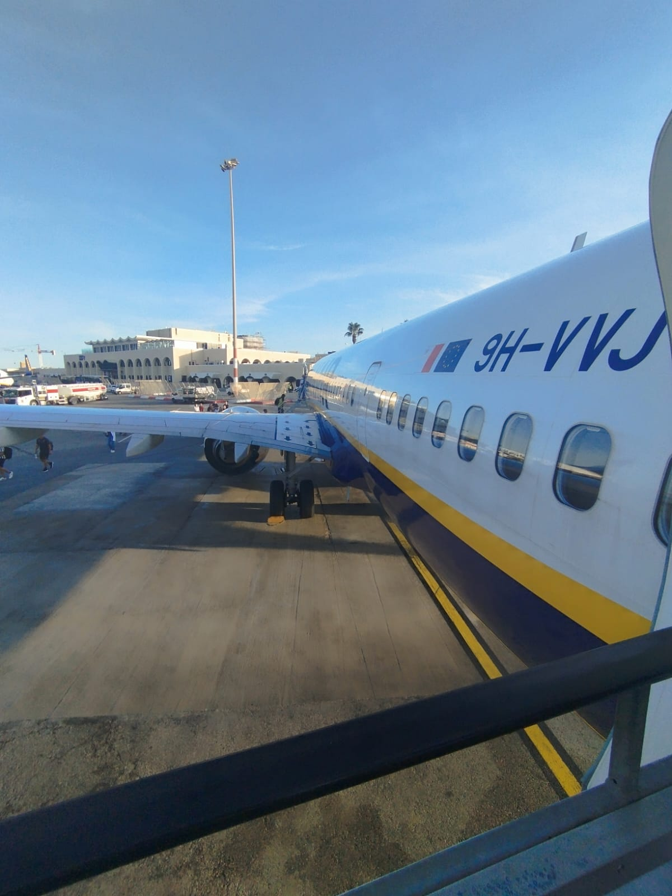

01 — L'Esperienza
Due settimane
Due settimane
a Malta
Siamo partiti da Firenze in tarda notte per raggiungere l'aeroporto di Bologna. Dopo il check-in siamo saliti sull'aereo e, dopo un paio d'ore di volo, siamo atterrati a Malta — per me è stata la prima volta su un aereo e all'estero.
Eravamo un gruppo di 15 studenti accompagnati da 2 professori. Una volta scesi dall'aereo, un bus privato ci ha portati direttamente all'hotel dove abbiamo alloggiato per tutta la durata delle due settimane.
